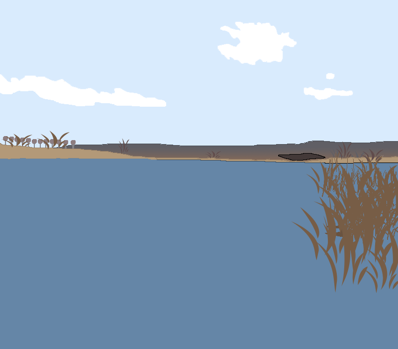

Слобода-Межирівська
Цю водойму неможливо спустити, має проточну воду, так як розташований на каскаді ставків. Знаходиться в оренді. Орендатор стверджує, що в Слободі Межирівській можливо спіймати карпа вагою понад 20 кг, щуку — 15 кг, товстолобика — 25 кг. На правому березі знаходяться біля 10 бесідок для відпочинку. В наявності вимостки для риболовлі. Хороший під'їзд до водойми. Цілодобова охорона. Водойма знаходиться у селі Слобода-Межирівська.
Водойму умовно можна розділити на дві частини: нижню — для ловлі мирної риби (короп, карась, плотва) та верхню — для ловлі хижої риби (окунь, судак, щука) спінінгом. Обмежень в ловлі риби по секторам відсутні. Короп вагою менше одного кілограму повинен бути відпущений. Ставок регулярно зариблюється хижою та мирною рибою.
Ціна
Ціна за добу - 100 грн. Ціна за ловлю лише у світлу пору доби - 50 грн.
Способи ловлі
З берега чи на човні.
Риба
В водоймі водиться така риба: Карась, Плітка, Окунь, Короп, Щука, Судак.
Дозволені снасті
Дозволено використовувати будь-які снасті окрім браконьєрських.
Глибина
Глибина досягає 4 метрів. Середня глибина - 2 метри.
Обмеження на вилов риби
Обмеження у вилові 5 кг на людину.